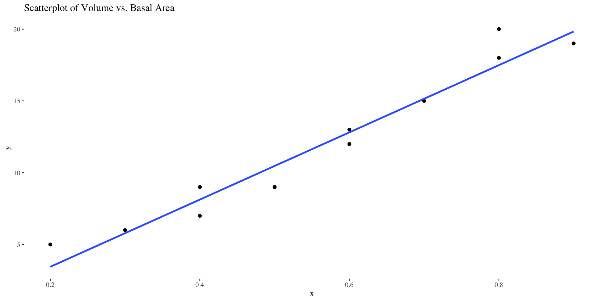
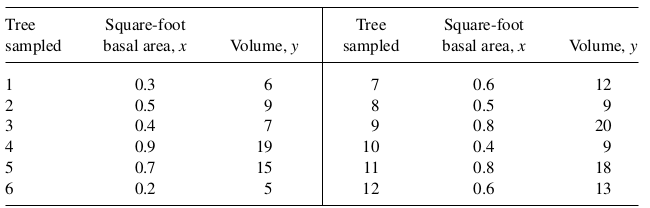
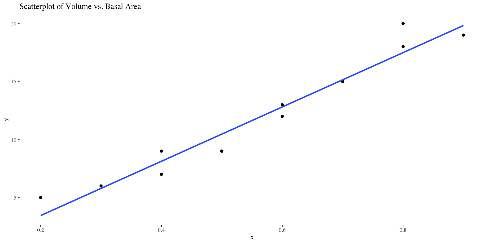
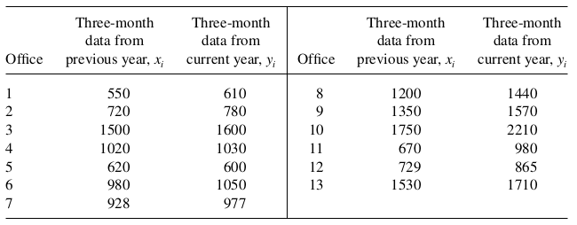
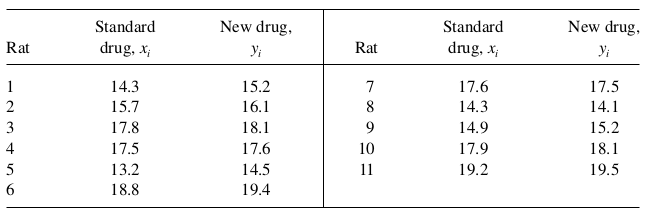

MATH 313: Survey Design and Sampling
Ratio estimators are utilized for their efficiency in estimating population parameters where relationships are proportional. For instance, they can effectively estimate the total sugar content in oranges based on their weight, providing a quick method compared to direct measurements.
The estimator for the population ratio \(R\) is given by: \[ r = \frac{\bar{y}}{\bar{x}} = \frac{\sum_{i=1}^n y_i}{\sum_{i=1}^n x_i} \] where \(\bar{y}\) and \(\bar{x}\) are the sample means of sugar content (\(y_i\)) and weight (\(x_i\)) of oranges respectively.
Understanding the variability of our ratio estimator is crucial for assessing the reliability of our sugar content estimations based on orange weights. The estimated variance of \(r\), when \(\mu_x\) (mean weight per unit in the population) is known: \[ \hat{V}(r) = \left(1-\frac{n}{N}\right) \cdot \left(\frac{1}{\mu_x^2}\right) \cdot \frac{s_r^2}{n} \] where \(s_r^2 = \frac{\sum_{i=1}^n (y_i - r x_i)^2}{n-1}\).
Estimating the total sugar content efficiently allows businesses to manage their inventory more effectively. \[ \hat{\tau}_y = r \cdot \tau_x \] \(\tau_x = N \mu_x\) represents the total weight of the orange shipment.
Quantifying the uncertainty in our total sugar content estimate helps in making informed decisions: \[ \hat{V}(\hat{\tau}_y) = \left(N \mu_x\right)^2 \cdot \hat{V}(r) = N^2 \left(1-\frac{n}{N}\right) \cdot \frac{s_r^2}{n} \]
Ratio estimators also aid in predicting the average sugar content per orange, which is vital for quality control. \[ \hat{\mu}_y = r \cdot \mu_x \]
Providing confidence intervals around our estimates assures stakeholders of the precision of our sugar content assessments: \[ \hat{V}(\hat{\mu}_y) = \mu_x^2 \cdot \hat{V}(r) = \left(1-\frac{n}{N}\right) \cdot \frac{s_r^2}{n} \] \[ \hat{\mu}_y \pm t_{1-\frac{\alpha}{2}, n-1} \cdot \sqrt{\hat{V}(\hat{\mu}_y)} \]
Example 1: (Textbook Ex 6.1) A forester is interested in estimating the total volume of trees in a timber sale. He records the volume for each tree in a simple random sample. In addition, he measures the basal area for each tree marked for sale. He then uses a ratio estimator of total volume. The forester decides to take a simple random sample of \(n=12\) from the \(N=250\) trees marked for sale. Let \(x\) denote basal area and \(y\) the cubic-foot volume for a tree. The total basal area for all 250 trees, \(\tau_x\), is 75 square feet. Use the data in the accompanying table to estimate \(\tau_y\), the total cubic-foot volume for those trees marked for sale, and place a bound on the error of estimation.

library(ggplot2)
data <- data.frame(
id = 1:12,
x = c(0.3, 0.5, 0.4, 0.9, 0.7, 0.2, 0.6, 0.5, 0.8, 0.4, 0.8, 0.6),
y = c(6, 9, 7, 19, 15, 5, 12, 9, 20, 9, 18, 13)
)
ggplot(data, aes(x = x, y = y)) +
geom_point() +
geom_smooth(method = "lm", se = FALSE) +
labs(title = "Scatterplot of Volume vs. Basal Area",
x = "Basal Area", y = "Volume")Example 2: (Textbook Ex 6.4) A corporation is interested in estimating the total earnings from sales of color television sets at the end of a three-month period. The total earnings figures are available for all districts within the corporation for the corresponding three-month period of the previous year. A simple random sample of 13 district offices is selected from the 123 offices within the corporation. Using a ratio estimator, estimate \(\tau_y\) and place a bound on the error of estimation. Use the data in the accompanying table and take \(\tau_x=128,200\)
Example 3: (Textbook Ex 6.6) An investigator has a colony of \(N=763\) rats that have been subjected to a standard drug. The average length of time to thread a maze correctly under the influence of the standard drug was found to be \(\mu_x=17.2\) seconds. The investigator now would like to subject a random sample of 11 rats to a new drug. Estimate the average time required to thread the maze while under the influence of the new drug. (The data are shown in the accompanying table.) Place a bound on the error of estimation.